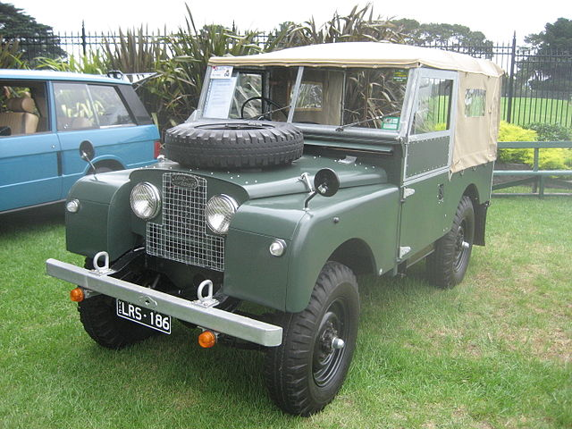

History
Produced in 1947, the Land Rover by Rover Company was conceived following the end of World War II. Rover’s chief designer Maurice Wilks, envisioned a light vehicle with an emphasis on agricultural and utility uses. Influenced by the Jeep Willys , the Land Rover was built on a Jeep chassis and axis but maintained its uniqueness with e steering wheel at the center of the vehicle. As new developments and innovations originated, the Series I, II, and III vehicles were created.
Model Uno
The Tesla Roadster is powered by a 3-phase, 4-pole induction electric motor that provides 185 kw of output or 248hp and goes 0-60 in 4.6 seconds . The torque output is immediately available due to being an electric vehicle at 200lb-ft and remains consistent from 0-6000 rpms. The motor is also air-cooled and does not need liquid cooling. The most impressive part is that the motor weighs less than 70 pounds.